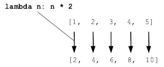

Python Map Lambda
A lambda expression is a way of creating a little function inline, without all the syntax of a def. Here is a lambda with a single n parameter, returning the parameter value doubled.
lambda n: n * 2
The code of the lambda is typically a single expression without variables or if-statements, and does not use "return". Lambda is perfect where you have a short computation to write inline. Many programs have some sub-part which can be solved very compactly this way. For longer code, def is better.
The map() function runs a lambda function over the list [1, 2, 3, 4, 5], building a list-like collection of the results, like this:
>>> list(map(lambda n: n * 2, [1, 2, 3, 4, 5])) [2, 4, 6, 8, 10]
To work with map(), the lambda should have one parameter in, representing one element from the source list. Choose a suitable name for the parameter, like n for a list of numbers, s for a list of strings. The result of map() is an "iterable" map object which mostly works like a list, but it does not print. Therefore, the examples wrap the map() result in list() for printing.
>>> nums = [1, 2, 3, 4, 5] >>> >>> map(lambda n: 2 * n, nums) # print fails, so list() below <map object at 0x10ce142e8> >>> >>> list(map(lambda n: 2 * n, nums)) # e.g. double each n [2, 4, 6, 8, 10] >>> >>> list(map(lambda n: n * -1, nums)) [-1, -2, -3, -4, -5] >>> >>> list(map(lambda n: 2 ** n, nums)) [2, 4, 8, 16, 32] >>> >>> strs = ['Summer', 'is', 'coming'] >>> list(map(lambda s: s.upper() + '!', strs)) ['SUMMER!', 'IS!', 'COMING!']
Lambda Def Equivalence
Map is often used with lambda, but it works with a def too. With def come the advantages of multiple lines, loops, comments, tests and what have you. Here is the above double-n computation written as a def instead of a lambda:
def double(n):
return n * 2
>>> nums = [1, 2, 3, 4, 5, 6]
>>> list(map(double, nums)) # use name of function "double"
[2, 4, 6, 8, 10, 12]
Note that the function is referred to by name, "double", but without the customary parenthesis (). This is the rare case of referring to a function, but not calling it.
Filter
As a companion to map(), the filter() function takes a function and a list, and returns a subsetted list of the elements where the function returns true.
For example, given a list of strings, return a list of the strings where the length is greater than 3:
>>> strs = ['apple', 'and', 'a', 'donut'] >>> >>> list(filter(lambda s: len(s) > 3, strs)) ['apple', 'donut']
As another example, given a list of numbers, filter to contain only the odd numbers (n % 2 is the modulus remainder after dividing by 2. For an even number returns 0, for an odd number 1.)
>>> nums = [5, 3, 6, 1, 7, 2] >>> list(filter(lambda n: n % 2 == 1, nums)) [5, 3, 1, 7]
Copyright 2020 Nick Parlante